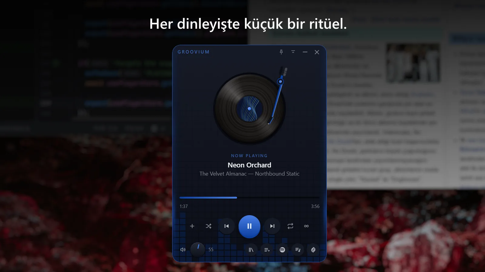
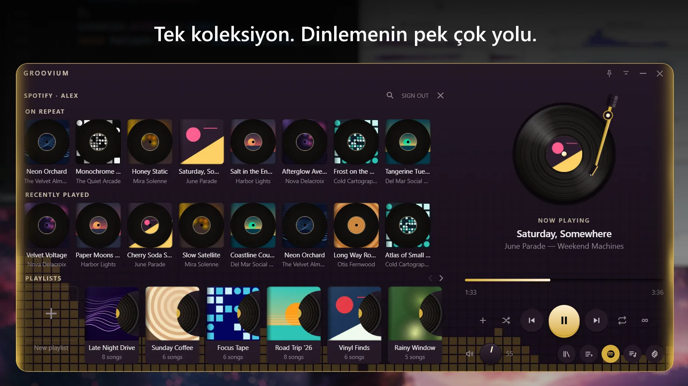
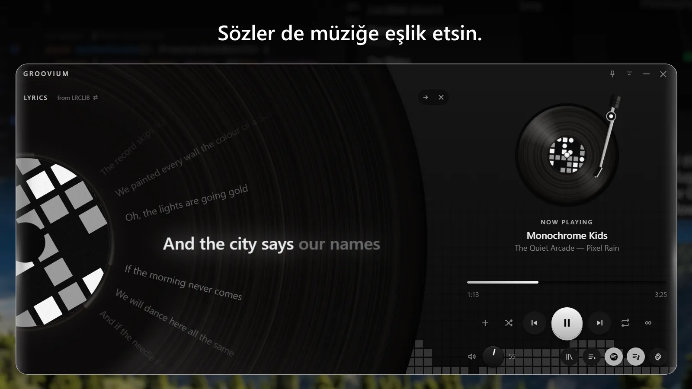

Sonsuz çalma
Son parça, son olmak zorunda değil. Koleksiyonun bittiğinde benzer bir parçayla devam et; öneriler Last.fm'den gelir, önce kendi arşivinde aranır.
English · Türkçe
Sevdiğin müzik. Yepyeni bir his.
Groovium, plak dinleme ritüelini masaüstüne taşır. Yerel arşivin ve Spotify, bugün için tasarlanmış bir pikapta buluşur.
Ücretsiz ve açık kaynak · Windows 10 ve 11 · Türkçe ve İngilizce

Dönen bir plak, müziği takip eden bir kol. Her şey elinin altında. Plağı kaldır, yeniden yerine bırak. Dinlemenin keyfine küçük bir dokunuş kat.

Arşivindeki favoriler ve Spotify parçaları, aynı Groovium çalma listesinde. Müziğini getir, bir parça seç ve kendine zaman ayır. Spotify Premium ve kurulum gerekir.

Sözleri plağın altında takip et veya yan panelde aç. Zamanlamalı sözler bulunduğunda her satır söylendikçe aydınlanır. Bir satıra dokun, o ana geri dön.
Ekran görüntülerindeki müzikler, kapaklar ve şarkı sözleri tanıtım için kurgulanmıştır.
Bir masaüstü müzik çalarından beklediğin her şey, yolundan çekilen bir pencerede.
Son parça, son olmak zorunda değil. Koleksiyonun bittiğinde benzer bir parçayla devam et; öneriler Last.fm'den gelir, önce kendi arşivinde aranır.
Bir palet seç, kendi renklerinle bir tane oluştur ya da bütün pencerenin renklerini albüm kapağına bırak.
Hep üstte tut, yalnızca kontrollere küçült ve yaptığın işi bölmeden medya tuşlarını kullan. Sistem tepsisi simgesi ve uygulama içi güncellemeler de hazır.
Groovium hesabı yok, analitik veya telemetri yok. Yerel ses dosyaların hiçbir yere yüklenmez.